Entre Sombras Y Luz
Quien no conoce su pasado está condenado a repetirlo.
Pero si renacieras, ¿tu pasado aún te definiría?
Depende de varios factores, pero… ¿me entiendes?
¿Qué piensas de la realidad?
Siempre has tenido esa pregunta en el fondo de tu mente, pero nunca tuviste una respuesta real.
Recordar y olvidar, vivir y morir…
Todo es cuestión de perspectiva, sabrás si disfrutarlo o no.
Oh… perdóname, quizás esperabas algo diferente.
¿Por qué no lo haría? Mi nombre es… Noah.
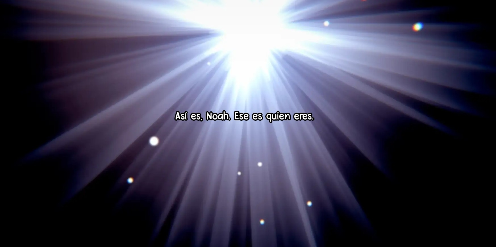Entiendo que estés confundido, pero pronto, todo volverá a ti.
Lo será, para todos nosotros.
— Sacudida —
Hmm… Parece que ella está tratando de despertarte.
Mantén la calma. Ahora concéntrate en lo que tienes frente a ti.
Volveremos a hablar pron...
— Dolor fuerte —
¿Lo que tengo… delante de mí…?
¿Qué estoy…?
¡Están a punto de presenciar la pelea final de este campeonato!
¿Campeonato?

Una espada de práctica… mi ropa de Kendo.
¡Después de muchos duelos, los más fuertes están cara a cara!
¿Me quedé dormido en medio de una pelea?
¡Nuestro retador que apareció de la nada, ganando todas sus peleas!

¡Tú puedes, Noah!
¿Hmm?
Esas voces…
¿Son las chicas del club de Kendo?
Siempre vienen a animarme… Pero ni siquiera recuerdo sus nombres.
A veces las ayudo en sus clases, pero siempre rechazo sus invitaciones para salir o pasar el rato.
Aun así, están aquí.
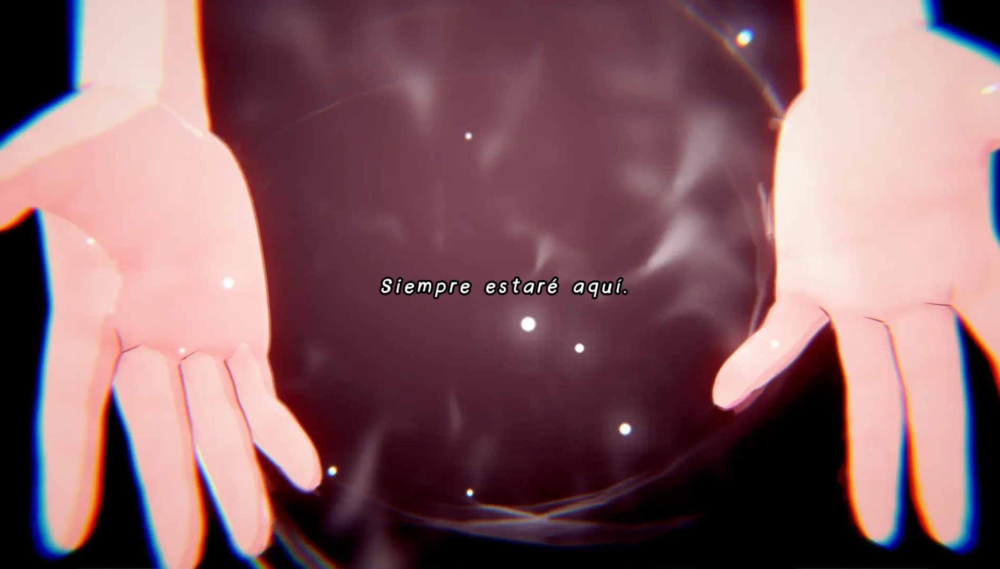¡Contra nuestro campeón regional por tres veces consecutivas!
¿Eh? ¿Qué?

Este debería ser la pelea más importante para el campeón
Si, si gana, competirá a nivel internacional
Noah tiene un duro oponente...
La pose, el hecho de que aún no se ha puesto el equipo y esa cara estúpida.
Este tipo no me toma en serio.
*Suspiro*
¿Cuándo fue la última vez que disfruté haciendo esto?
Cierto... cuando mi madre solía enseñarme antes de fallecer.
Ahora, esto se ha convertido en nada más que una forma de-
¡Pero está vez es especial!
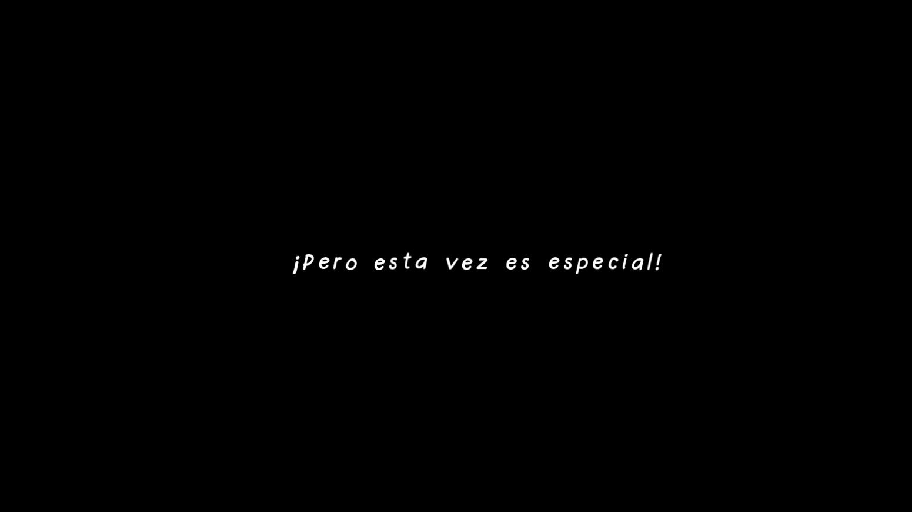 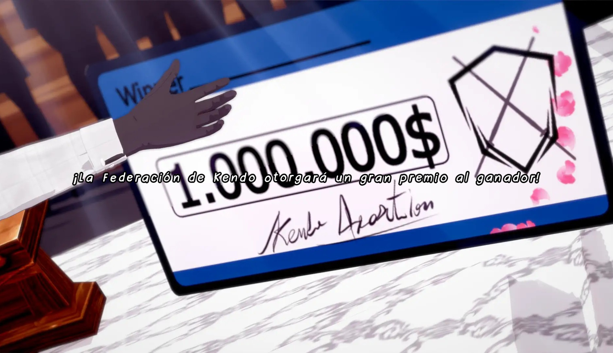
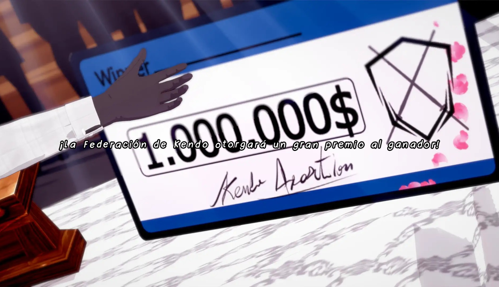
Exactamente, por eso entre en este torneo...
Está es la única forma de ganar dinero fácil para pagar mis estudios y vivir cómodamente
Sin mi madre, me quedé solo, no tengo otros parientes y mi padre nos abandono antes de que yo naciera
¿Por que estoy recordando esto ahora? Debo concentra-
— Sacudida Fuerte y Dolor intenso—
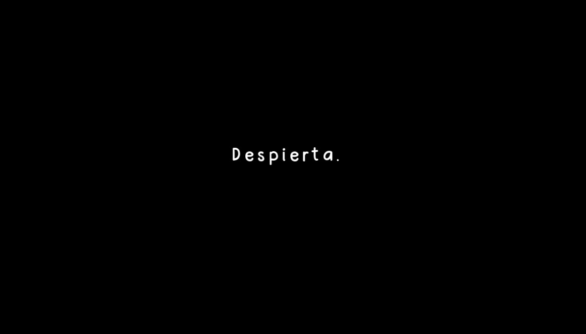Ggh-
M-Mi cabeza... duele
No debería haberme quedado despierto hasta tarde ayer
Pero los exámenes finales están tan cerca, no puedo perder tiempo...
¿Hmm?
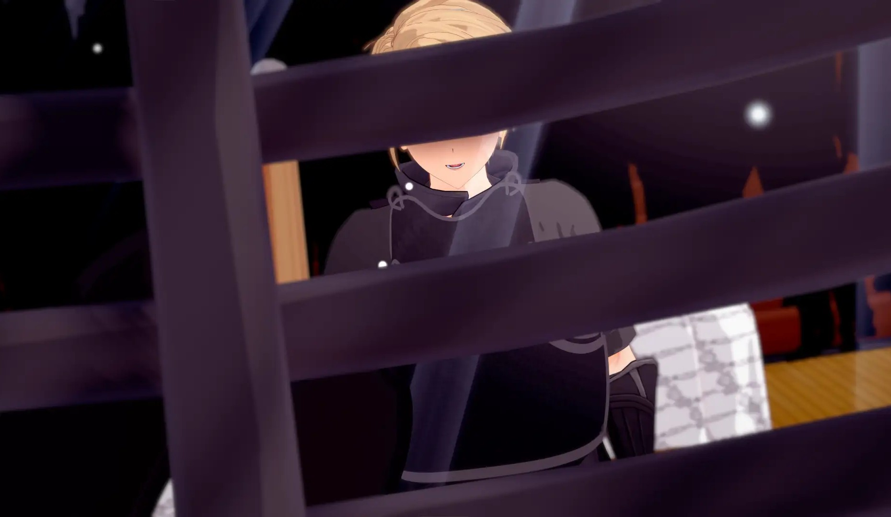— ... —
Está diciendo algo... pero no recuerdo que dijo
¿Hmm? ¿R-Recordar? ¿Cómo recordaría algo que aún no he escuchado?
Era la típica frase de un tipo con un ego muy alto
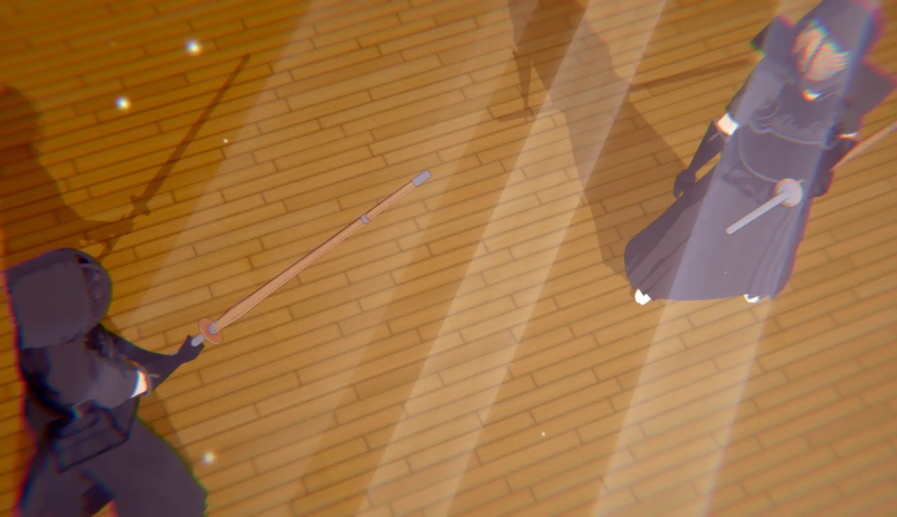¿Y nadie le dirá nada por esa postura estúpida que está haciendo? Se que quiere impresionar al jurado, pero...
Da igual… terminemos con esto pronto
Listos...
Después de su ataque bajo, haré una finta y dejaré su guardia desprotegida.
...
¿Por que hablo como si supiera lo que va a hacer...?

¿¡…¡?

¡Haaaa!
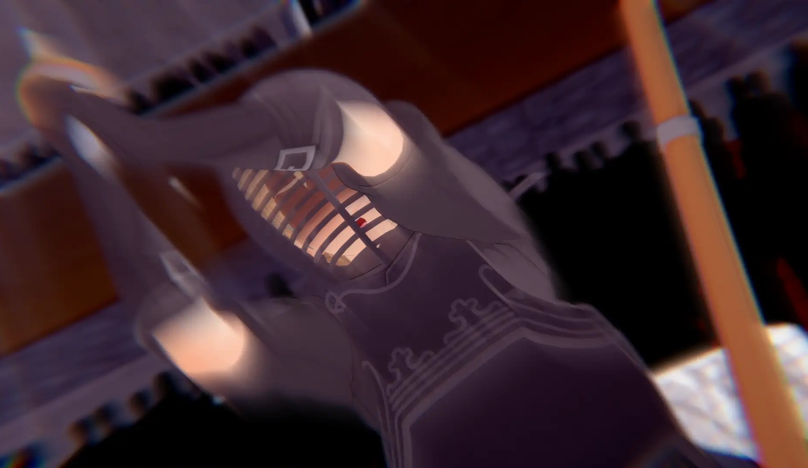

Y el ganador es...

...
¿Q-Que acaba de suceder?
Siento que esto... ya ha pasado...
Debo estar demasiado cansado, mejor me voy a casa...

Espera, ¿no quieres dedicarnos unas palabras? ¡Acabas de convertirte en el campeón de esta región!
¿Hmm? Mmm....
Gracias por invitarme
¡Un hombre de pocas palabras! ¡Démosle un aplauso a nuestro campeón y ganador!
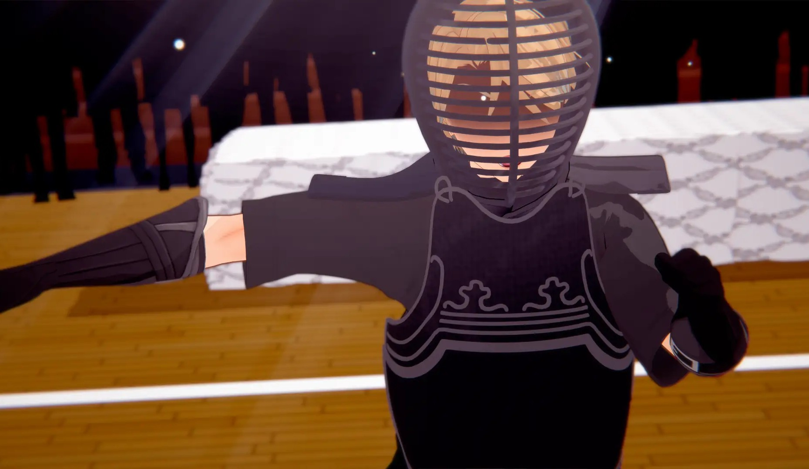¡Esto no es justo¡ ¡Es imposible que el gane!
¡Estoy seguro de que hizo trampa!
No puede ser, que mal perdedor
Siempre me pareció patética su forma de pelear, no respetaba a sus oponentes...
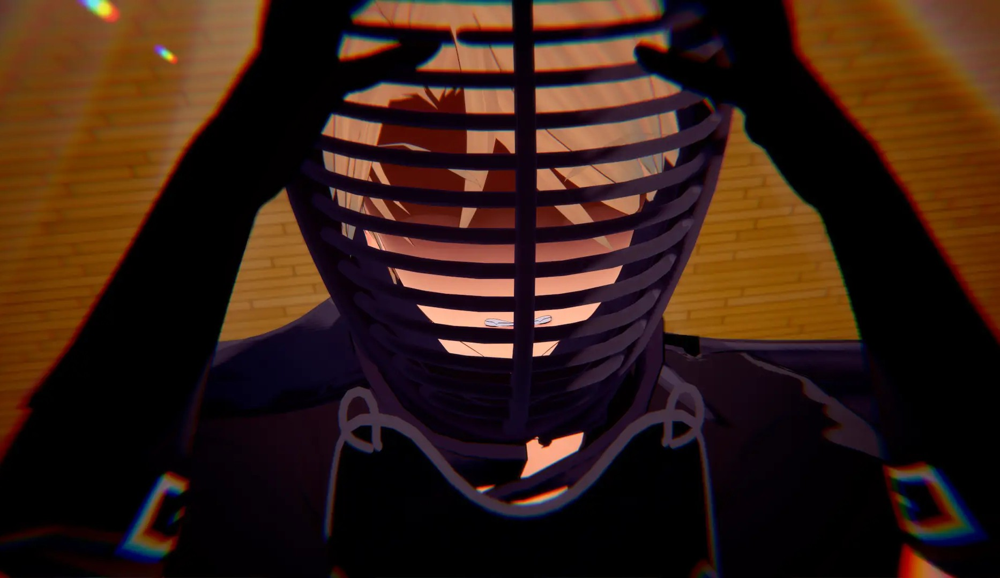¿Que hizo trampa? Todos vimos como te patearon el trasero
¡Este maldito, arruinó todo!
¡Mi dinero , mi fama!
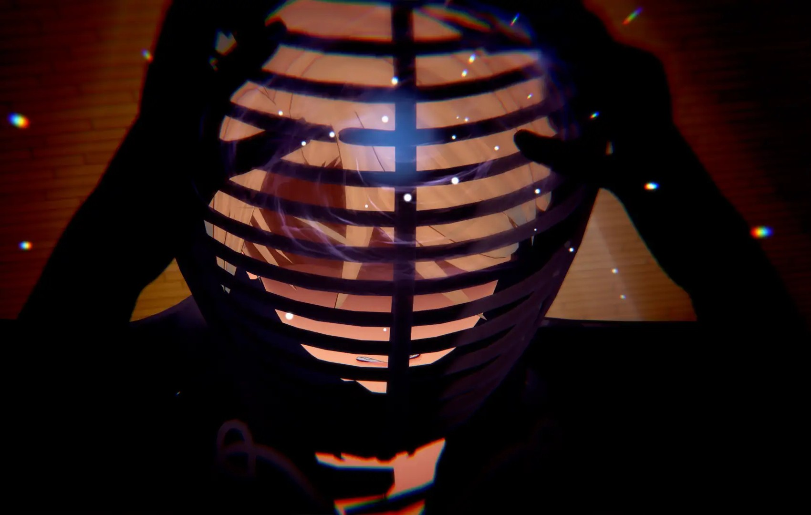Mi futuro
¡Noah! ¡Estuviste increíble!
¿Hmm?

Oh... presidenta del club
¡Las chicas y yo estábamos gritando a todo pulmón!
¡Le distes una lección a ese llorón ricachón!

Gracias...
Uhm… ¿tienes algo que hacer después de la ceremonia de premiación?
Porque si quieres... podemos ir a celebrar todos juntos...
¡Tu puedes, presidenta¡
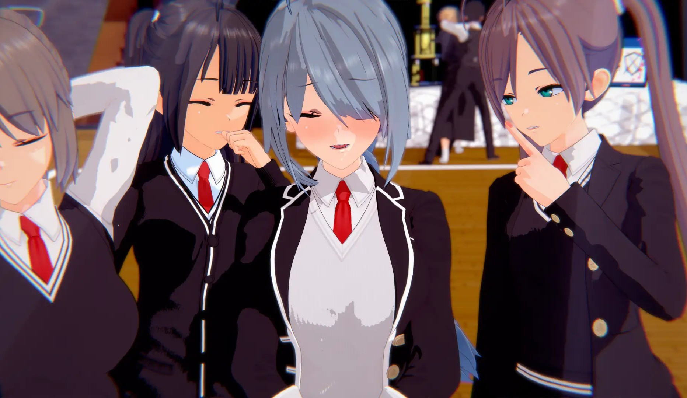¡Shh!
Creo que no podré... tengo que ir a estudiar y-
¡Oye! ¿Que estás haciendo? ¡Baja eso!
¿Qué está pasando allá?

Es su culpa...
¡B-Baja eso, es peligroso!
Todo es...
¡Su culpa!
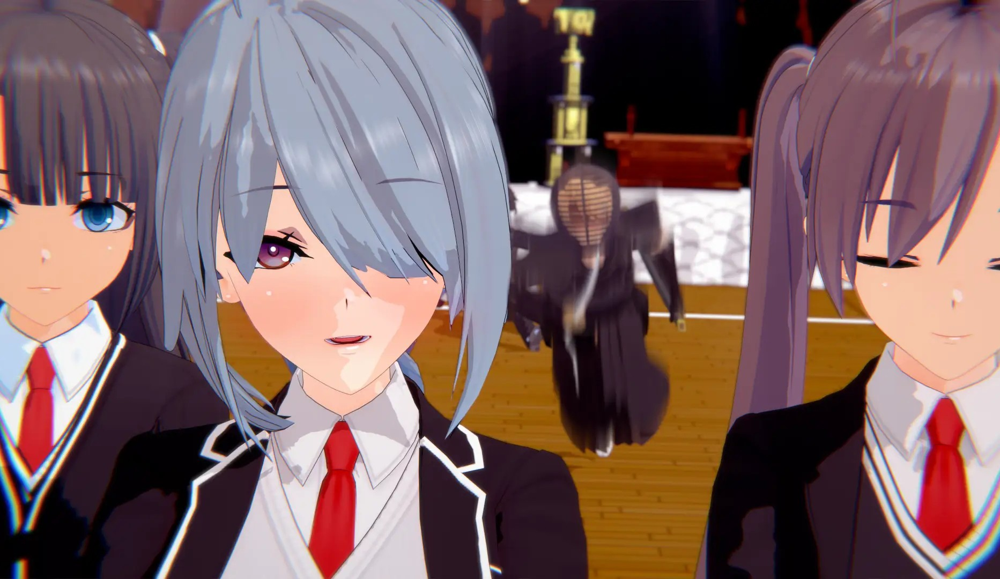¿Que dices?
¡Ese tipo, ¿que está haciendo?!

¡Muévete!!
¿Eh?
— .... —
— .. —
Ya veo
Ahora todo tiene sentido
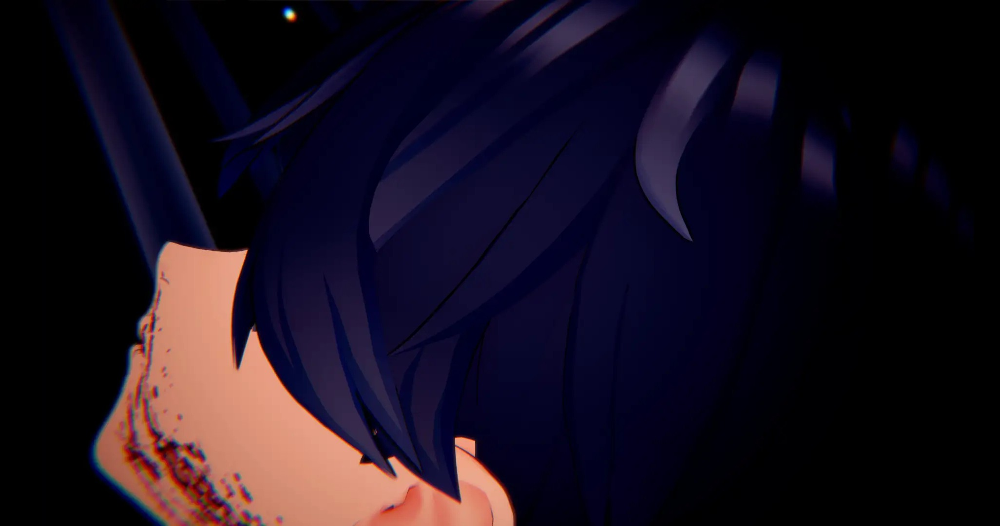Lo único que aparece ante mis ojos... ¿es como mori?
Sin recuerdos de mi madre, sin momentos felices...nada
Es como si toda mi vida hubiera sido solo una niebla vacía
Oye~ Despierta
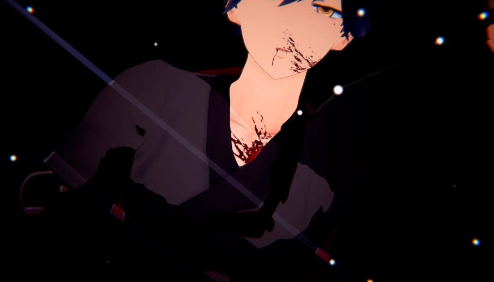Solo una repetición de mis últimos momentos...
Mi vida... fue tan insignificante. ¿Cómo permití que se volviera así?
Siempre esperando que el futuro trajera algo mejor, pero nunca hice nada para cambiar las cosas
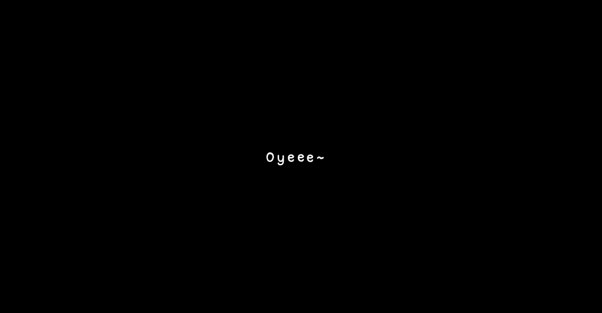¿Por que no viví realmente? ¿Por que no tome riesgos, aproveché oportunidades, encontré a alguien que me importara?

¿Y ahora que me queda? Solo este sentimiento de vacío...
Pero no hay tiempo. Todo ha terminado, y ahora solo tengo recuerdos de una vida que nunca viví realmente
¿Quien hubiera pensado que pensaría en estas cosas solo en el momento de mi muerte...
jajaja...
Tan simple es la vida humana...
En ese momento, actué sin pensar en lo que me costaría...
Ni siquiera supe su nombre, pero de mi vida por ella
Suspiro*
Si tenía que morir por algo...me alegra que haya sido para proteger a alguien mas
No me arrepiento de nada...

Solo 5 minutos más...
Nada de 5 minutos más, levántate ahora~~
Si... s-
Si no te despiertas te voy a pellizcar
ZzZ...
Te lo advertí... Fufu~♥
— Pellizco —
...
Fufu... finalmente despertaste
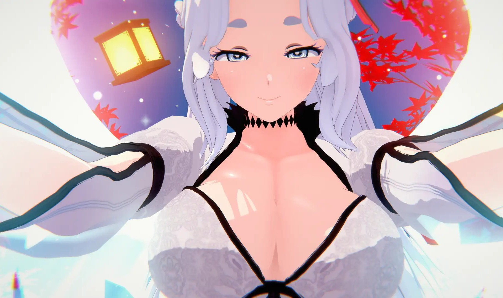...
¿Que pasa? ¿El gato te comió la lengua?
Increíble
¿Mmm?
¿Están bien mis ojos? ¿Hay una chica hermosa encima de mí?
¿Y tiene alas?
¿Por qué me siento más emocionado que sorprendido?
¡Hey! Hola, guapo
¿U-Un angel?
Bienvenido de vuelta, pensé que nunca abriría los ojos
¿Qué es... este lugar?
¿Por que no puedo sentir mi cuerpo?
Se que tienes muchas preguntas y voy a res-
...
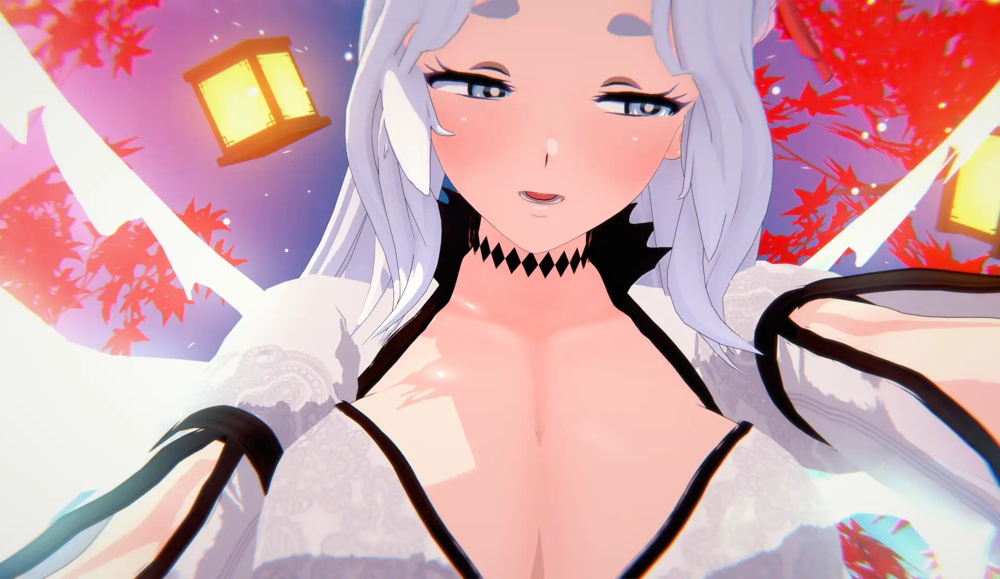Uhmm... Fufu~♥
¿Estás seguro de que no sientes tu cuerpo...?
Si, es como si estuviera dormido desde mi cuello hasta...
-mis pies
Oh...
¡E-Espera!
¡No es lo que parece!

Tranquilo, es una reacción natural
— Dice en voz baja: —
¿Está así por yo?
¿Dijiste algo?
Ah, nada~~♥
¿Crees que puedes levantarte?
Para asi, no distraernos tanto... ♥
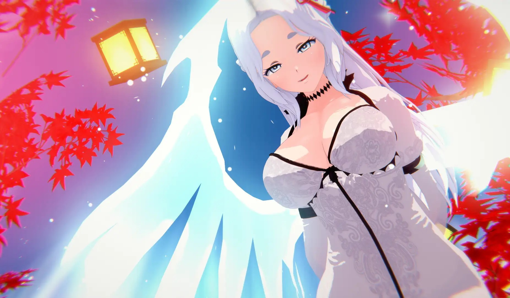Si lo haces, respondere lo que quieras...
E-Esta bien...
— Respira hondo y se concentra lo más que puede en cada extremidad de su cuerpo—
Ah~♥ que pena...
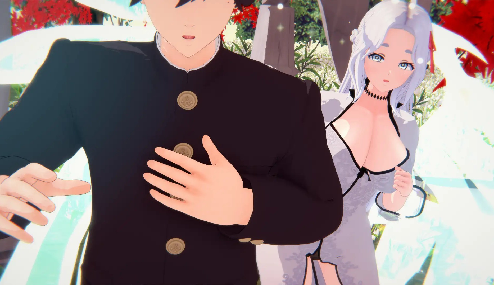El corte... y la sangre desaparecieron
¿y cuando cambie de ropa
¿Cómo te sientes?

Mejor
Mi cuerpo se siente muy ligero y mi visión está un poco borrosa
Pero más que nada estoy muy... confundido
¿Quien eres?
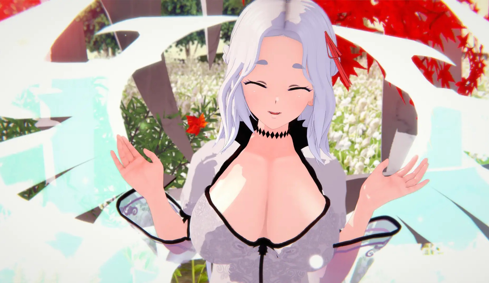Soy Keiko
Cómo puedes ver soy una diosa
Ah ella era una diosa, no un ángel
No es que lo sepa, nunca he visto una antes
Pero... eso explica su inmensa...
Belleza
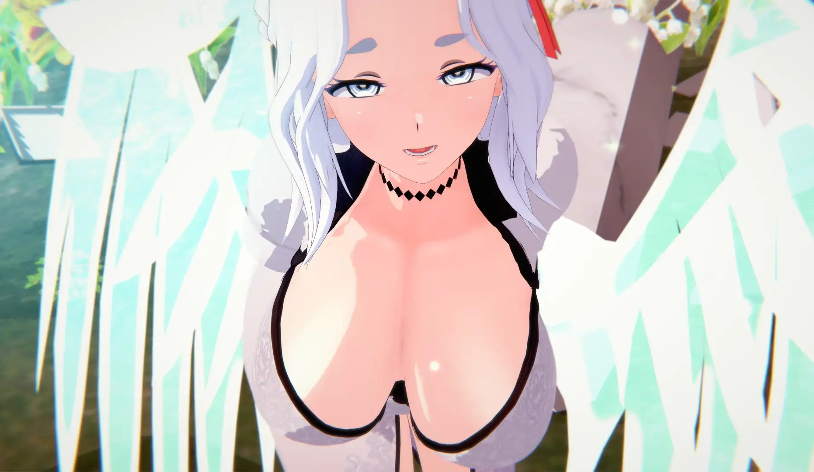¿Algo anda mal?~♥
¡T-Tengo más preguntas!
¿Cómo he acabado aquí?
¿Qué paso después de que ese tipo me atacó? ¿Está bien la chica?
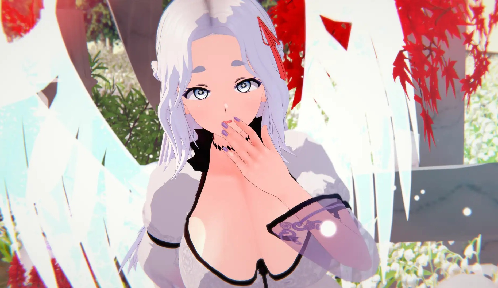Espera, ¿Me estás diciendo que conservaste tus recuerdos?
Entonces es verdad...
¿Es eso algo malo?

¡No,no, esto es increíble! ¡Un alma que recuerda su vida pásada no puede ser más interesante!
Alma...
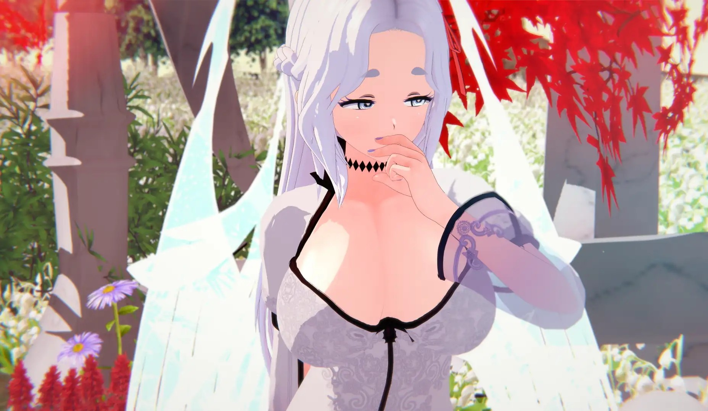Oh sí... acabas de morir
Se que estás asustado, Y no entiendes-
No pensé que alguien pudiera perder la cordura hasta ese punto
Espero que ese tipo no haya atacado a nadie más
...

No te ves tan preocupado
No es algo fácil de tragar
¿Pero que más puedo hacer? Todo es un consecuencia de mis acciones
Además ¿Cómo debo reaccionar? Nunca actuó como la gente espera que actúe
La vez que murió mi madre, no derrame ni una sola lágrima.
Toda la gente del funeral pensaron que estaba loco
Pero en ese momento... todavía no creía que fuera cierto...

Hmm... eres bastante interesante~♥
¿Qué es este lugar?
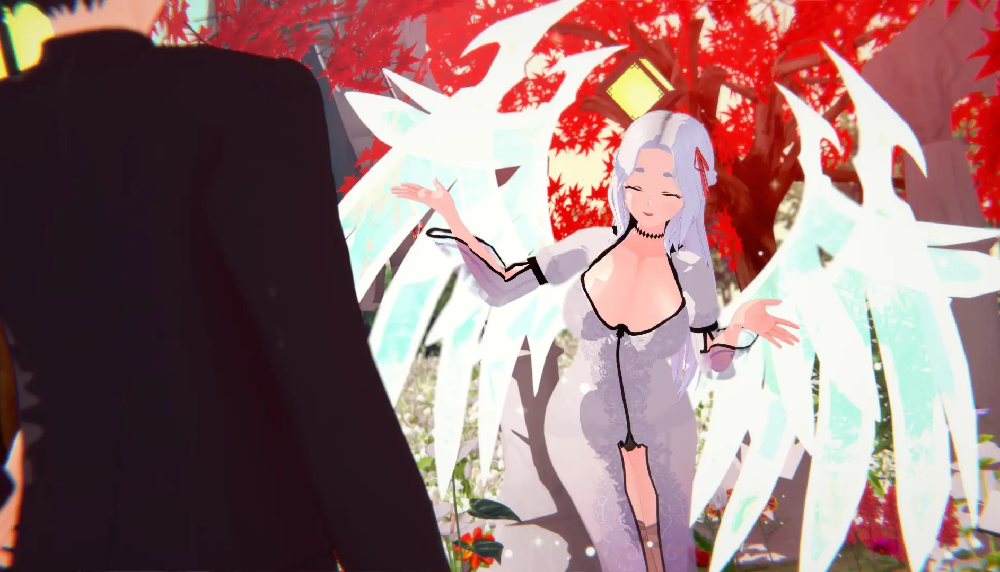Esto sería una parte de lo que llamas cielo
¿Una parte? ¿Por qué?
Si, este lugar fue creado por mí y durará lo que yo quiera
Sabes, no es sabiamente aceptado entre las diosas inferir con los mortales...

Pero quería hablar contigo cara a cara~♥
Glup*
¿P-Por que yo?
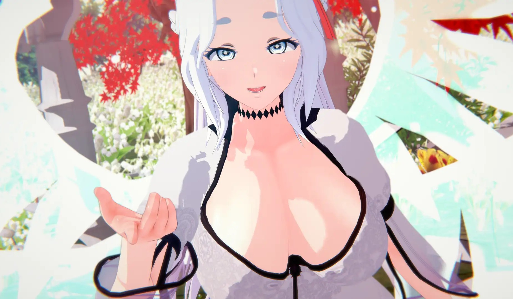Porque te está observando
¡Salvaste a esa chica sin siquiera pensarlo!
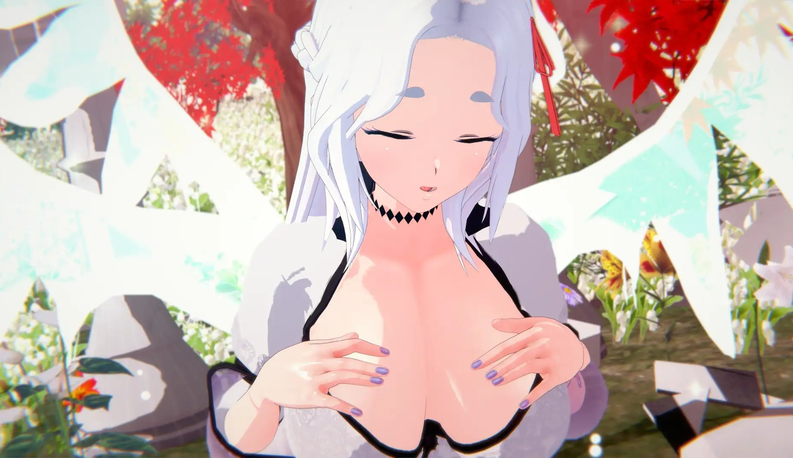Y cuando sentí tu alma, no tenías ningún remordimiento sobre tu acción
No podía dejar pasar la oportunidad de conocer a alguien como tu
Y quería saber que clase eras
Para, me halagas
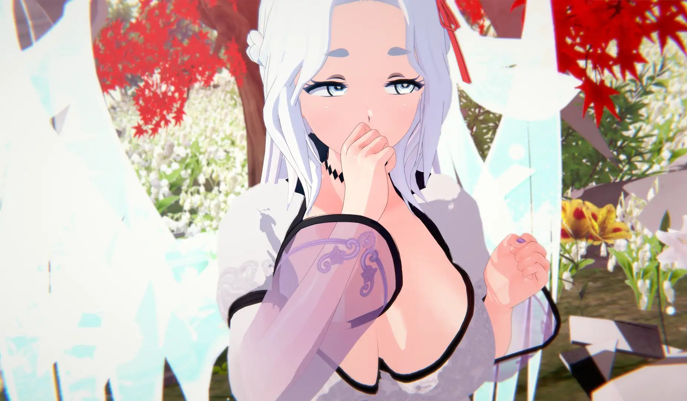y estaba aburrida...
¿Cómo?
— Silencio Corto—
No tengo más preguntas

Gracias por responder a mis preguntas
No pensé que una diosa se tomaría el tiempo de hablar conmigo
Tomare esto como una recompensa por mi acción

¿Quien iba a pensar que mi vida acabaría así
En un abrir y cerrar de ojos
Y me pasé toda la vida solo estudiando y entrenando...apartando a la gente
¿Cuál fue el propósito de mi vida?
Jajaja...
...
Suspiro*
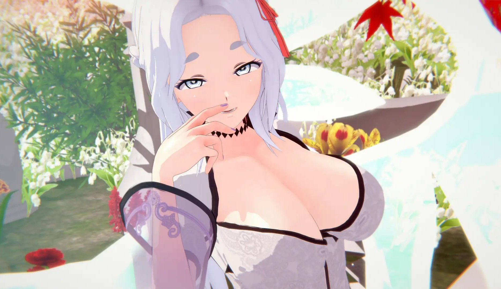¿Espera... No te traje aquí solo para hablar~
¿Q-Qué?
Si, tengo algo más en mente... una especie de recompensa como dices~♥
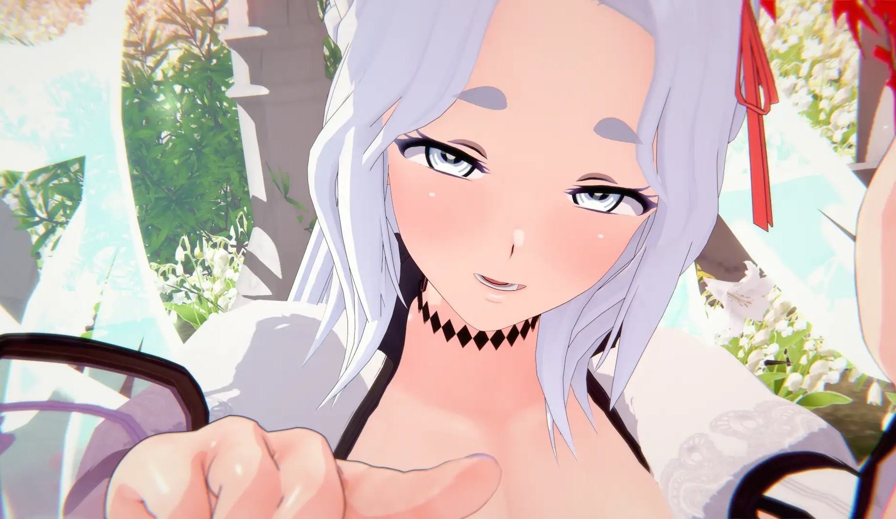Que ambos disfrutemos~♥
Glup*

¿Es esto lo que creo que es? ¿Son estas escaleras a la adultez?
Madre, tu hijo abandonado finalmente se convertirá en adulto
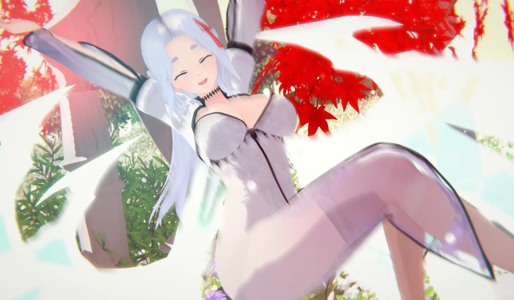Te daré la oportunidad de volver a la vida en un nuevo mundo
Oh...

¿Oh?
¿Quiero decir, ¿n-nuevo mundo?
Casi en quito los pantalones...
Si, por tu acto de valentía
Te recompesare con una nueva vida
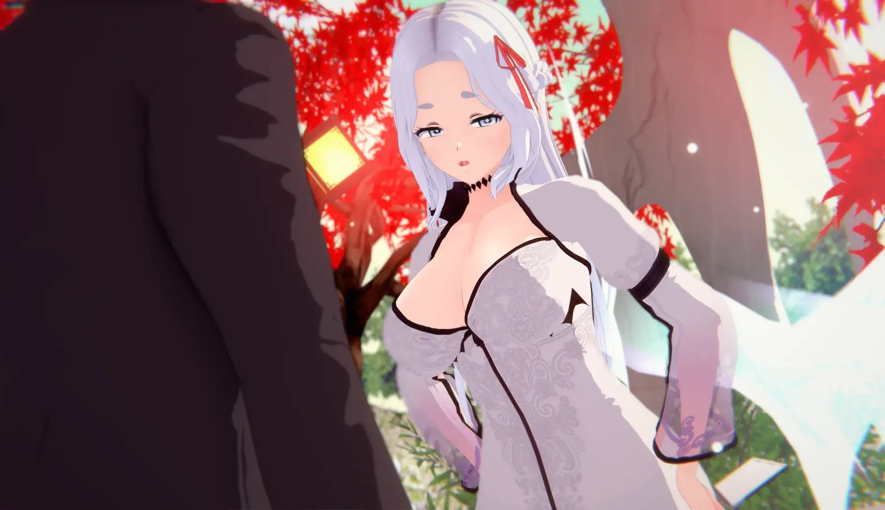Aunque, no esperaba que conservaras tu recuerdos...
Iba a hacerte renacer como un recién nacido
...
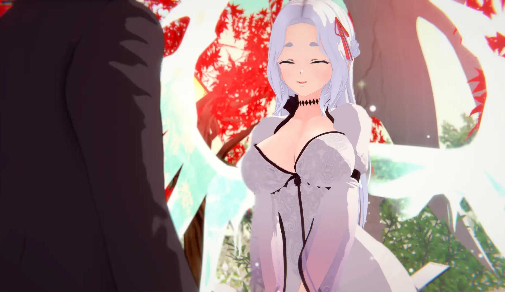Bueno, cambio de planes
prácticamente resucitaras
...
¿Será que ella es bastante despreocupada...?
— Susurrando: —
¿Que puede salir mal?~♥
Eeh...
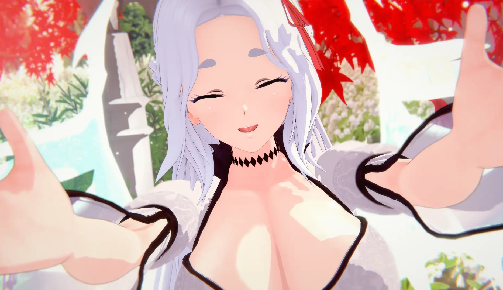Piensa en esto como una nueva vida pero con tus recuerdos del pasado
No suena nada mal...
¡Esto va a ser genial! ¡Se que me entretendras mucho!
Entrete-
Bueno, da igua, podré volver a vivir
Ver lo fácil que es morir me mostró que debería vivir mi vida y no simplemente dejarme llevar
Si estás dispuesta a darme esa opción
Aprovecharé cada momento al máximo

Me alegra~♥ Siempre estare observandote
También te daré mi bendición
Tómala como algo para enfrentar los peligros que encontrarás~♥
¿Peligros?
¿Qué tipo de peligros?
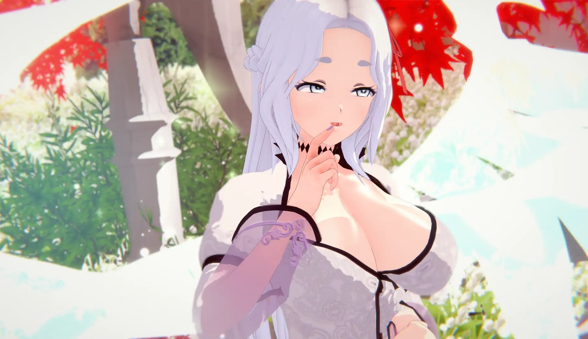Ya sabes, monstruos,magia... personas malas
Además, con mi bendición, tus atributos físicos mejorarán
No queremos que dures solo unos días en este mundo, jeje
Lo aceptaré encantado
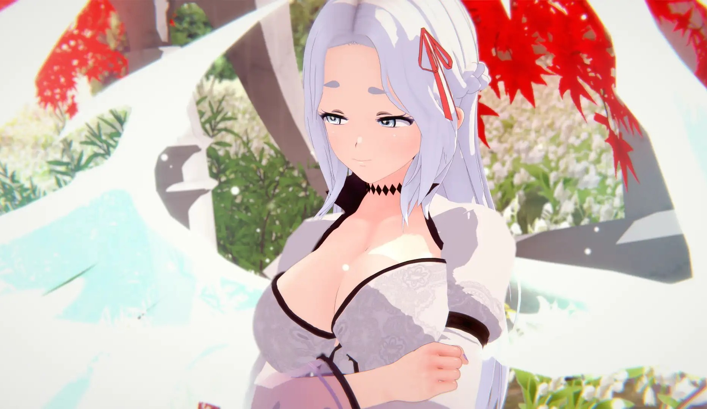— Susurra: —
Nunca he hecho esto antes...
Espero que funcione, ni era tan difícil...
Bueno,lo que pase, pasará~
— ... —

Otra cosa, si quieres aprender magia, tendrás que encontrar a alguien que te enseñe
¿Magia? un mundo con magia, como será eso...
Entendido, ya lo tengo más o menos claro,Keiko
¡Perfecto! Ahora acércate y cierra los ojos
Está bien...
— Noah cierra los ojos y percibe las manos delicadas de la diosa posarse sobre su cabeza, seguido de una intensa energía recorriendo su cuerpo.—
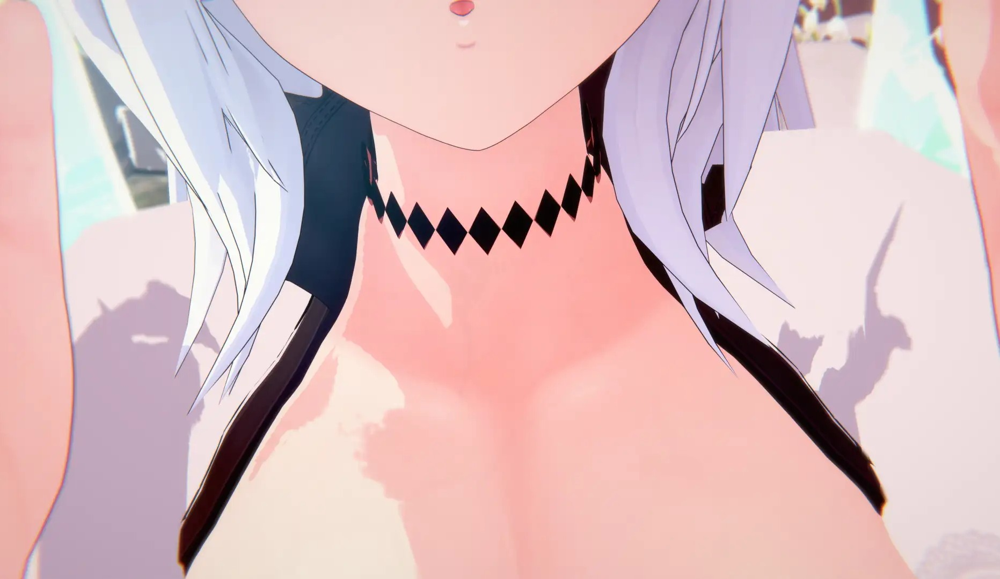 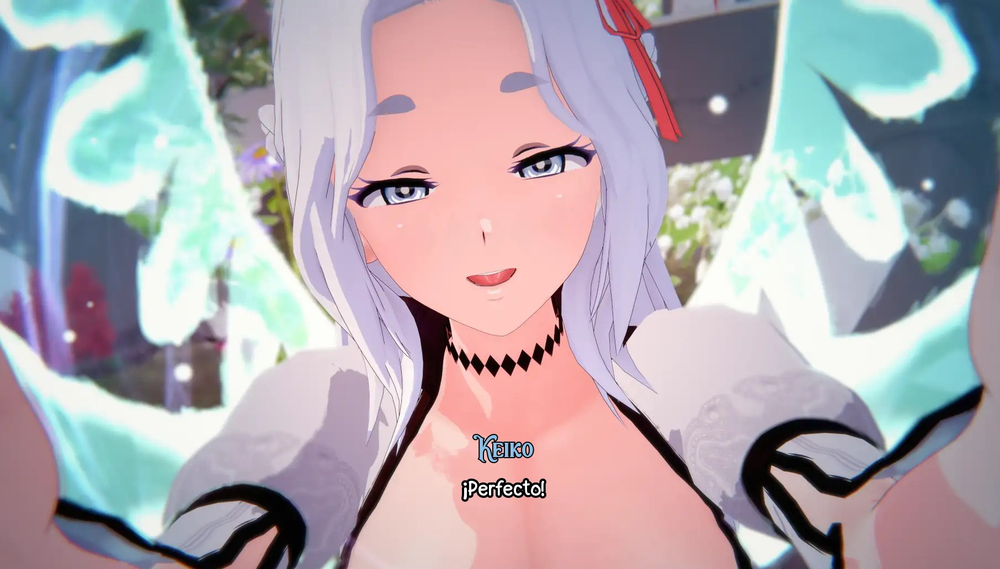Siento como si algo estuviera creciendo en mi cuerpo...
¡Es-Este poder,me siento mejor que nunca!
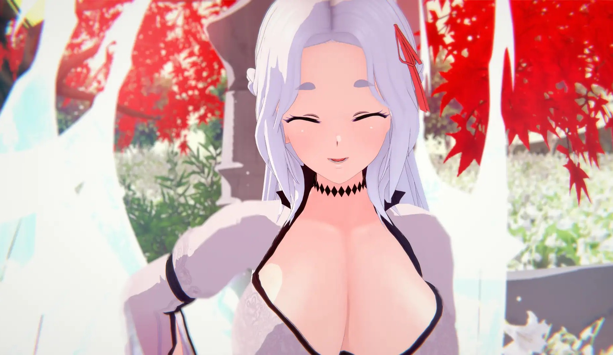¡Ah! Bueno, creo que es hora de que te vayas
Una cosa mas
Se que no es mencionarlo pero...
Nunca menciones nada de esto,si los dioses descubren que alguien renació con sus recuerdos...
No se que harían...
Lo prometo, soy el mejor guardando secretos
Me alegra escuchar eso,Noah
Espero que si nos encontramos de nuevo, sea bajo circunstancias diferentes~♥
¿Cuando le dije mi nombre?
Yo también lo espero, Keiko...
— Oscuridad completa —
Así que aún no es el final
Pero pensar que todo lo que acaba de pasar ha sido por el puro aburrimiento de esa diosa
Ella no me pidió nada a cambio... Siento que algo no está bien
Mmm... lo que pase, esta vída ya no será la misma que antes
— Poco a poco tanto su conciencia como el alma son transportadas —
— Se siente en un vacío total Pero con un destino claro —
— Se deja llevar hasta que algo lo detiene en seco—

...
Cuandoe dijo *nuevo mundo* "
No era esto lo que esperaba
Pero no me quejo
Un gato...¿No, chica zorro?
Tontito~
Aún no estás ahi
¿Todavía no?
Espera, ¿ella tiene alas como las de Keiko?
Y tu eres una diosa por lo que puedo ver...
¿Todas las diosas hacen esto?
Me harán adicto a despertarme asi
Si
Soy Fumiko
Yo Noah
¿También viste como me corto un tipo loco?
Hmm... y tienes recuerdos...
Mierda
Lo siento Keiko
Hice lo que pude
Así que...Keiko encontró a alguien interesante
Puedo sentir su bendición sobre ti... una muy fuerte

Tengo un trato para ti
¿Qué tipo de trato?
No diré nada sobre esto...
...
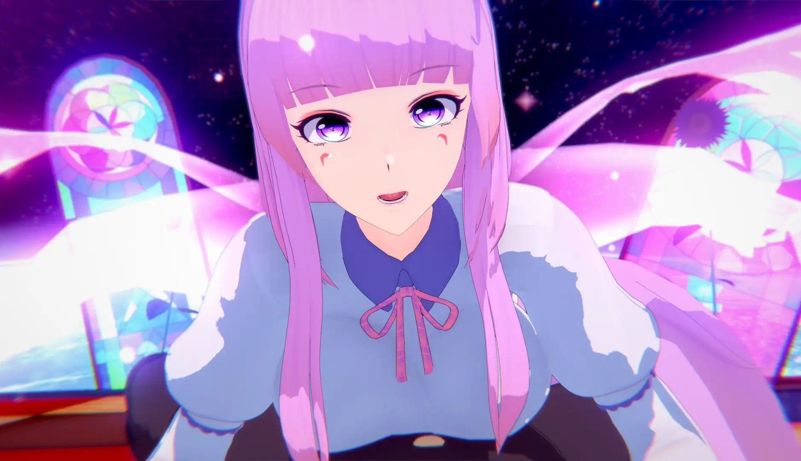Si me ayudas con algo
...
No creo que tenga otra opción
Si hay algo en lo que pueda ayudar te...
Perfecto, mira tienes-
...
...
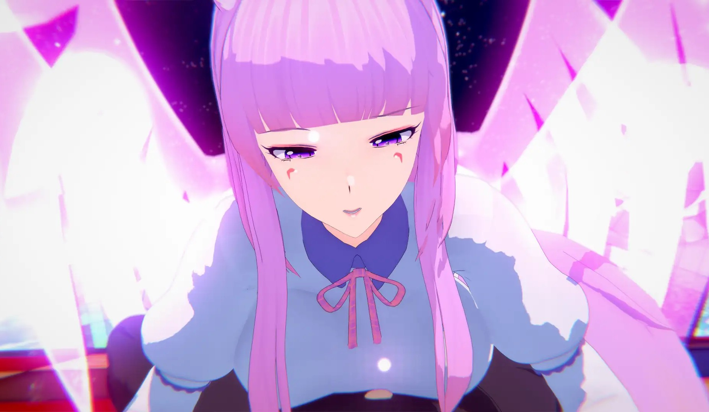¿Por qué siento que algo me golpea el estómago?
...
¡Vamos,hombre! ¿En serio?
Empiezo a pensar que tengo un problema ahí abajo
— Fumiko se gira para averiguar de qué se trata. —
Emm...
...
Es una... piedra
...
...
Estoy jodido

Que extraño, debe ser una roca muy grande
¿y con que propósito? ¿por que razon-
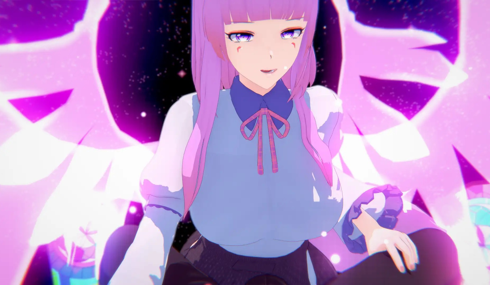Bueno, lo que sea
Espera ¿En serio?
¿De verdad se lo creyó?
Levantemonos para hablar mejor
Y suelta esa piedra , A veces no entiendo a los humanos
ok...

Ejem*
Entonces explícame, ¿Que quieres que haga?
Bueno...
Pata resumir...
Este mundo al que vas, no es un lugar feliz para todos
Sabía que Keiko me ocultaba algo
Me pregunto que podría entretener a una diosa si puede verlo todo
No puedo ser un idiota, pero no estúpido
Lo entenderás cuando lo veas, pero digamos que hay mucha... diferencia entre... eh... *cosas*

Y alguien muy importante para mí está en ese lugar
No puedo darte muchos detalles pero...
Ella está en peligro o lo estará pronto
¿y quieres que la proteja?
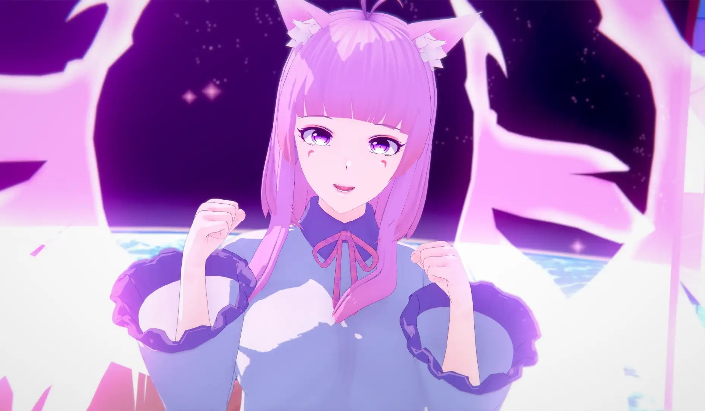Exactamente

Las diosas no pueden intervenir en el mundo *humano*
¿Pero no acabas de intervenir en el puro hecho de enviarme allí?
...
...
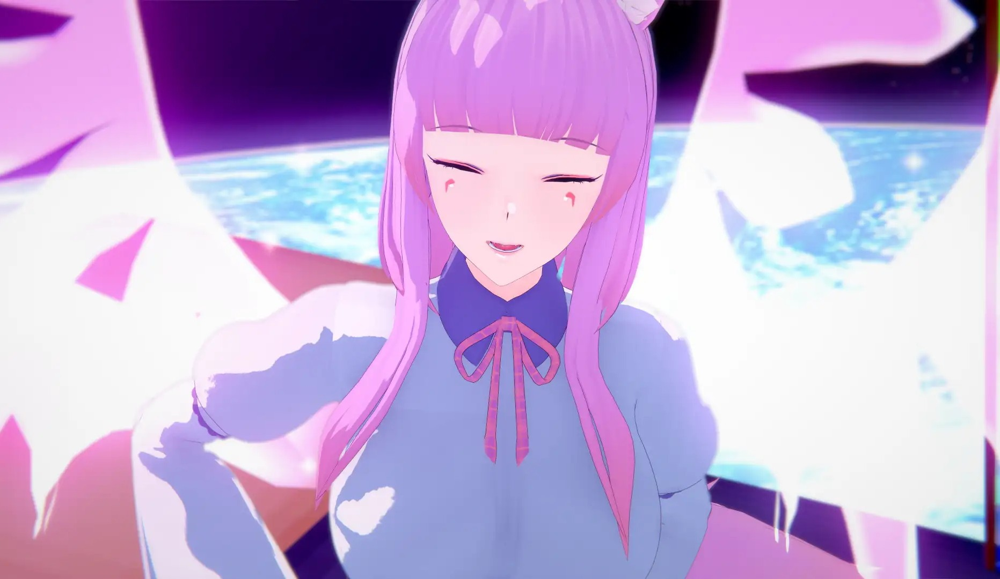Si me ayudas-
¿Acaba de ignorarme por completo...?
¡Manténdre tu secreto, y todos estarán felices!
¿Qué te parece?

Mmh...
Mi respuesta es bastante clara
Nada ha cambiado en mi, aunque haya muerto, sigo siendo yo
Se que aunque ella no hubiera descubierto mi secreto, la habría ayudado de todos modos
Déjamelo a mi,no tienes que preocuparte
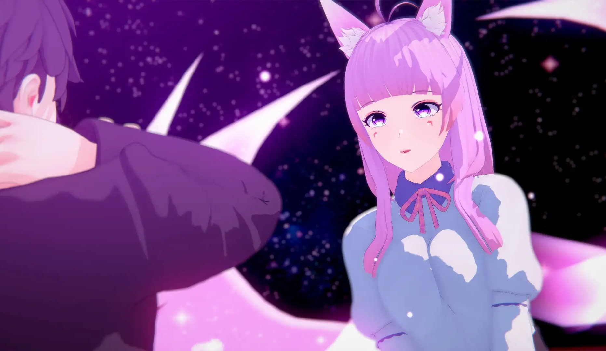Trato o no trato, no dejaré que nada malo le pase
Te lo prometo por mi alma que está frente a ti
Además, ella quiere salvar a alguien, a diferencia de Keiko que solo quiere entretenerse
Ah.. Uhm.. ¡Si!
¿Mmm?
Yo...

Cuento contigo...
¿Algo pasa , Fumiko?
¡Ah! No por supuesto que no
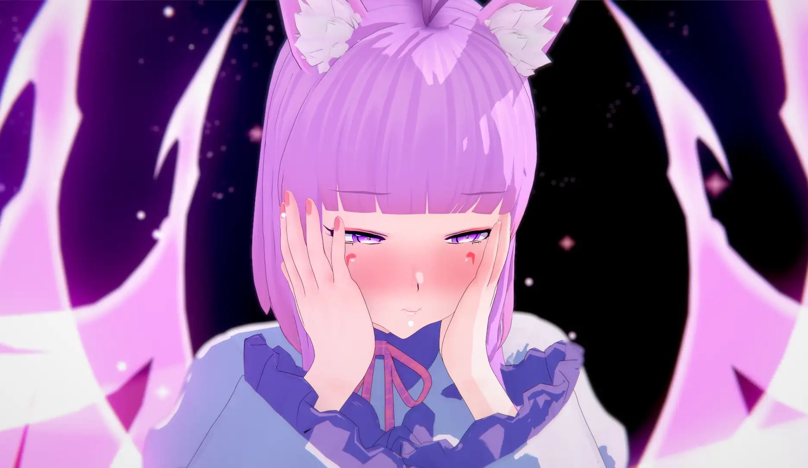— Susurrando: —
¿Qué me está pasando...
...
Su cara se puso roja, debe estar muy preocupada
Entonces, debería irme
Cuánto antes llegué, más segura estará

¡Ah, cierto!
¿Necesitaras algo?
¿Por qué habla más bajo si aquí no hay nadie?
Te daría mi bendición, pero la tienes ya está... lo suficientemente fuerte
Y pienso demaciado

Mmm...
No se...
¿Puede darme cosas materiales?
Q-Q-

QQ-QQ-QQ-QQ-
¿¡Qué estás haciendo!?
Oh... lo siento, fue un reflejo
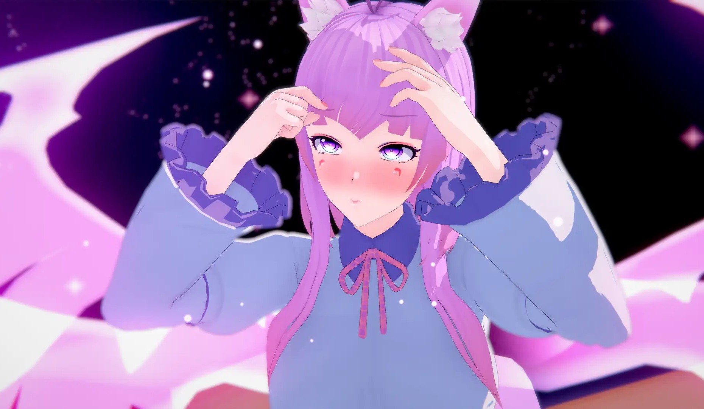Algo que me pueda ayudar en un mundo en el que empezaré de cero...
Si tendré que enfrentarme a monstruos o magia...
¿Puedes conseguirme una katana?

¿Una katana? ¿Es lo único que quieres?
Mmm... Además, no se cómo serán las ropas de este mundo, pero quiero asegurarme
Si, y ropa acorde al mundo, no quiero llegar así
Llamare mucho la atención si tuviera un aspecto diferente al *normal*
Si...Puedo hacerlo
...

Jajaja~
Eres un humano muy extraño
Ya veo por qué Keiko te dejo renacer así
¿Mmm?
¿A qué te refieres?
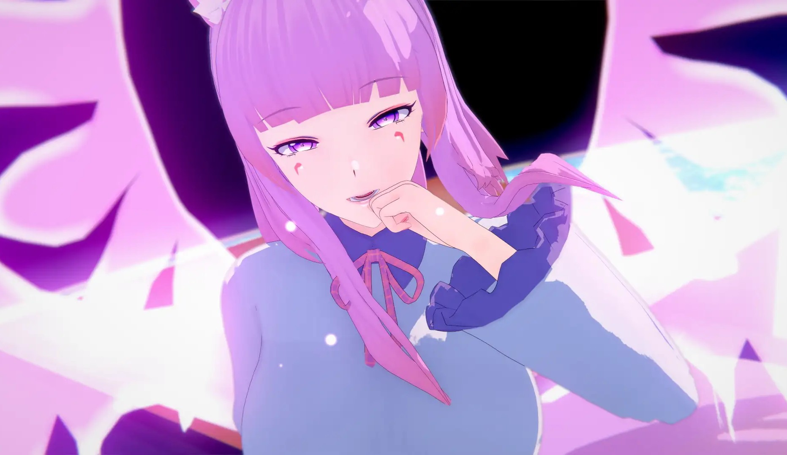Nada, nada fufu~
No se que paso, pero al verla reír, parece que todas sus preocupaciones se desvanecieron
Mmm... Te ves realmente linda cuando te ries
...
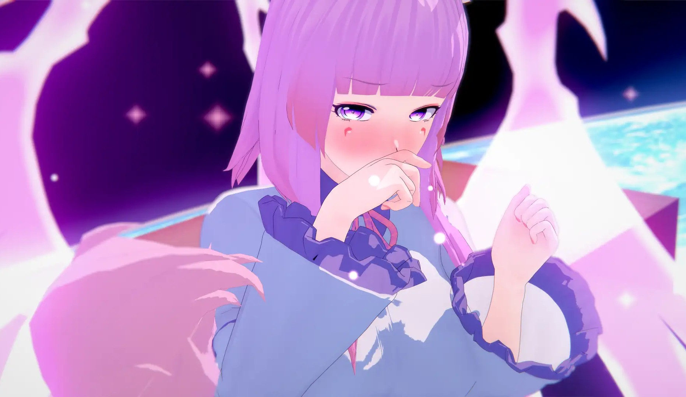Ah...
B-Bueno,te enviaré ahora. ¿Estás listo?
— Susurrando: —
¿Por que mi corazón late tan rápido con lo que dice este mortal...?
Si, Cuando quieras

Está bien... cierra los ojos

¡Espera!¿y como sabré a quien debo proteger?
— Oscuridad total —
Lo sabrás cuando llegue el momento...
¿Y volveré a verte?
...
T-Tal vez...
— ... —
Está sensación de vacío otra vez...
Es como flotar en la nada
Un nuevo mundo suena bien...
¿Qué tipo de gente conoceré?
...
Sea lo que sea, primero debo cumplir mi promesa
— yNoah entreabre los párpados —
siento una suave brisa
El sol me llega directamente pero no es incómodo, de hecho, es suave y cálida sensación
Así que he renacido de verdad
¿Qué clase de lugar es este?
Se siente tan pacífico... No se siente como mi mundo original en absoluto
Infinidad de árboles, un cielo despejado
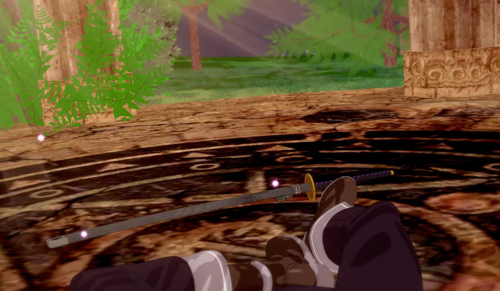...
La katana que pedí
Fumiko realmente me la dio
Parece que no toman muy en serio la regla de no intervención...
Debe haber casos especiales
Es una Katana muy buena
Solo con sostenerla me doy cuenta
¿Hmm?
En el mango dice...
...

Broma
Ahora, necesito saber dónde estoy
Será mejor que revise el área, o se pondrá oscuro y no quiero pasar un mal rato...